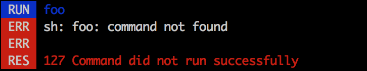

Process Helper¶
The Process Helper shows processes as they’re running and reports useful information about process status.
To display process details, use the ProcessHelper
and run your command with verbosity. For example, running the following code with
a very verbose verbosity (e.g. -vv):
use Symfony\Component\Process\Process;
$helper = $this->getHelper('process');
$process = new Process(['figlet', 'Symfony']);
$helper->run($output, $process);
will result in this output:
It will result in more detailed output with debug verbosity (e.g. -vvv):
In case the process fails, debugging is easier:
Arguments¶
There are three ways to use the process helper:
Using a command line string:
// ... $helper->run($output, 'figlet Symfony');
An array of arguments:
// ... $helper->run($output, ['figlet', 'Symfony']);
Note
When running the helper against an array of arguments, be aware that these will be automatically escaped.
Passing a
Processinstance:use Symfony\Component\Process\Process; // ... $process = new Process(['figlet', 'Symfony']); $helper->run($output, $process);
Customized Display¶
You can display a customized error message using the third argument of the
run() method:
$helper->run($output, $process, 'The process failed :(');
A custom process callback can be passed as the fourth argument. Refer to the Process Component for callback documentation:
use Symfony\Component\Process\Process;
$helper->run($output, $process, 'The process failed :(', function ($type, $data) {
if (Process::ERR === $type) {
// ... do something with the stderr output
} else {
// ... do something with the stdout
}
});